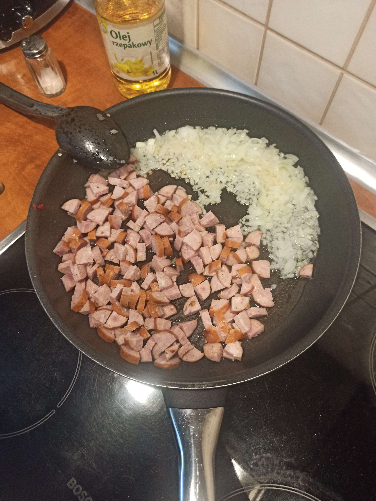
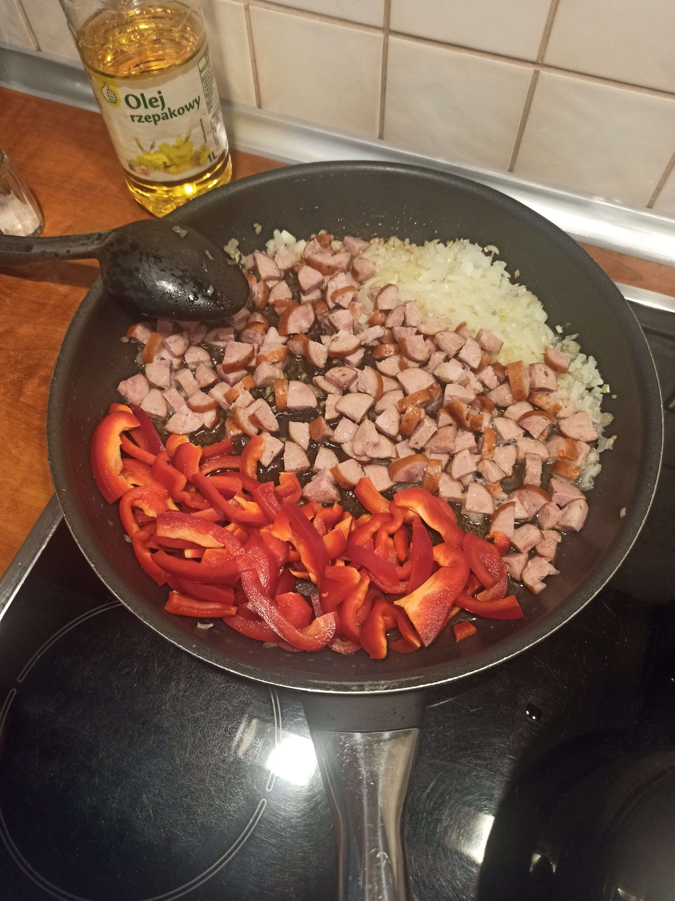
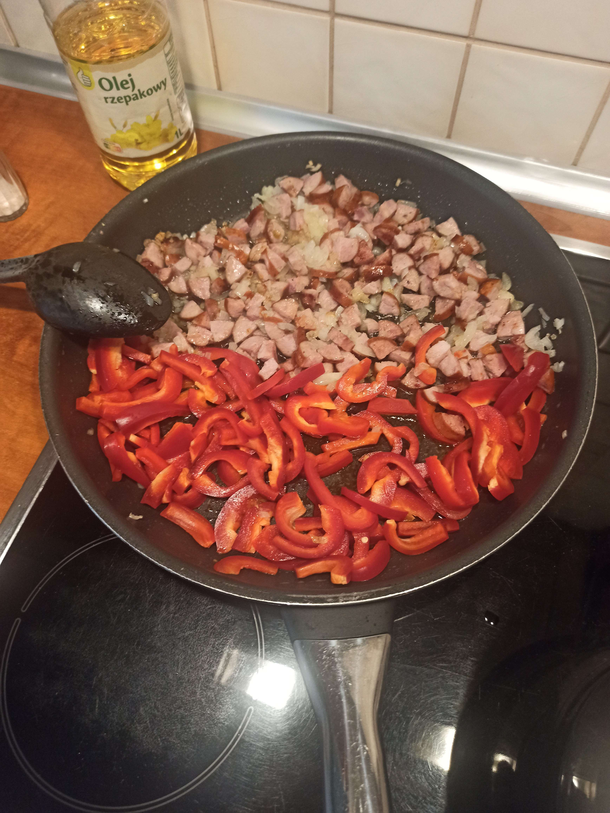
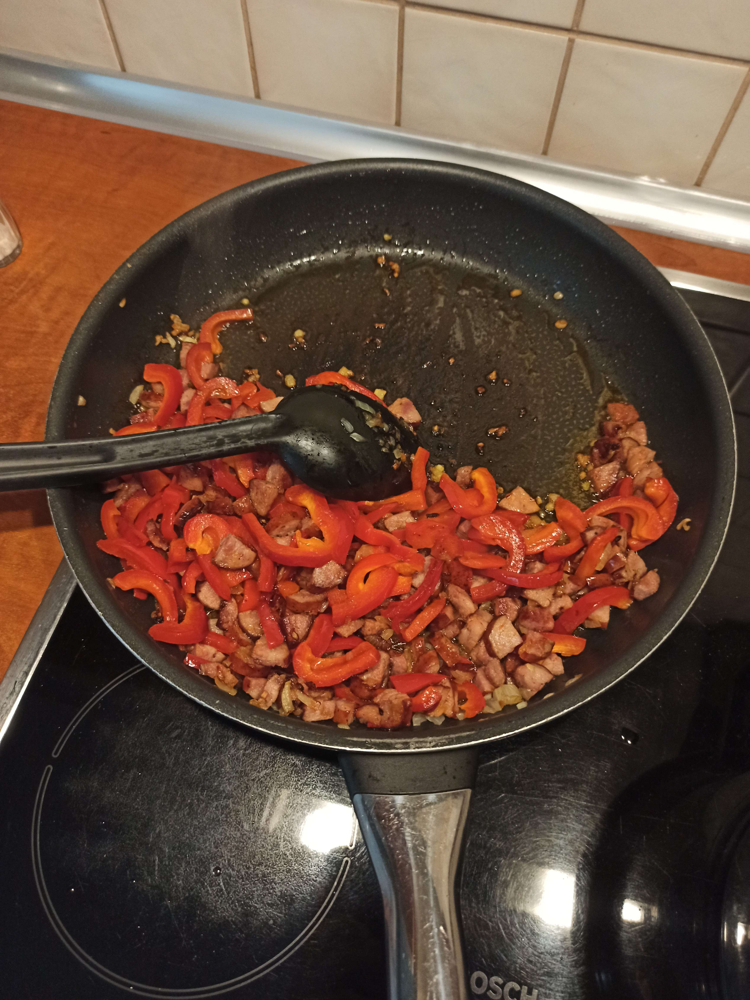

Składniki:
- 2 cebule
- 2 papryki (3)
- 2 duże kiełbasy (1)
- 400g makaronu świderki
- 4 jajka
Smażyć cebule na oleju. Dodawać pokrojoną kiełbasę w ćwiartki i smażyć obok cebuli. Dodać paprykę pokrojoną w małe paski obok i dalej smażyć.
W międzyczasie gotować makaron. Jajka roztrzepać w misce. Ugotowany makaron odcedzić, dodać na patelnię i wymieszać. Dodać jajko i mieszać do zcięcia.



